1. Mach-O的文件的基本结构如下：
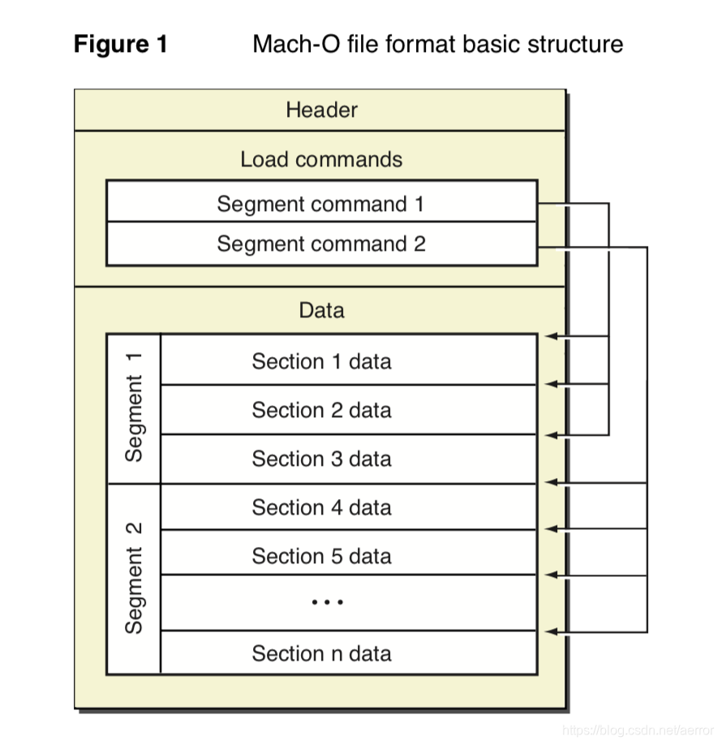
2.例子文件所有头部：
Mach header
magic cputype cpusubtype caps filetype ncmds sizeofcmds flags
MH_MAGIC ARM V7 0x00 OBJECT 5 1960 SUBSECTIONS_VIA_SYMBOLS
Load command 0
cmd LC_SEGMENT
cmdsize 1824
segname
vmaddr 0x00000000
vmsize 0x0003e3b4
fileoff 1988
filesize 252337
maxprot rwx
initprot rwx
nsects 26
flags (none)
Section
sectname __text
segname __TEXT
addr 0x00000000
size 0x0000922c
offset 1988
align 2^4 (16)
reloff 254328
nreloc 1670
type S_REGULAR
attributes PURE_INSTRUCTIONS SOME_INSTRUCTIONS
reserved1 0
reserved2 0
Section
sectname __gcc_except_tab
segname __TEXT
addr 0x0000922c
size 0x00000330
offset 39408
align 2^2 (4)
reloff 0
nreloc 0
type S_REGULAR
attributes (none)
reserved1 0
reserved2 0
Section
sectname __StaticInit
segname __TEXT
addr 0x0000955c
size 0x000001c4
offset 40224
align 2^2 (4)
reloff 267688
nreloc 90
type S_REGULAR
attributes PURE_INSTRUCTIONS SOME_INSTRUCTIONS
reserved1 0
reserved2 0
Section
sectname __common
segname __DATA
addr 0x0003d9b1
size 0x00000820
offset 0
align 2^0 (1)
reloff 0
nreloc 0
type S_ZEROFILL
attributes (none)
reserved1 0
reserved2 0
Section
sectname __cstring
segname __TEXT
addr 0x00009720
size 0x00000222
offset 40676
align 2^0 (1)
reloff 0
nreloc 0
type S_CSTRING_LITERALS
attributes (none)
reserved1 0
reserved2 0
Section
sectname __bss
segname __DATA
addr 0x0003e1d4
size 0x000001e0
offset 0
align 2^2 (4)
reloff 0
nreloc 0
type S_ZEROFILL
attributes (none)
reserved1 0
reserved2 0
Section
sectname __data
segname __DATA
addr 0x00009950
size 0x00000130
offset 41236
align 2^4 (16)
reloff 268408
nreloc 71
type S_REGULAR
attributes (none)
reserved1 0
reserved2 0
Section
sectname __const
segname __DATA
addr 0x00009a80
size 0x00000114
offset 41540
align 2^2 (4)
reloff 268976
nreloc 67
type S_REGULAR
attributes (none)
reserved1 0
reserved2 0
Section
sectname __const
segname __TEXT
addr 0x00009ba0
size 0x00000098
offset 41828
align 2^4 (16)
reloff 0
nreloc 0
type S_REGULAR
attributes (none)
reserved1 0
reserved2 0
Section
sectname __mod_init_func
segname __DATA
addr 0x00009c38
size 0x00000004
offset 41980
align 2^2 (4)
reloff 269512
nreloc 1
type S_MOD_INIT_FUNC_POINTERS
attributes (none)
reserved1 0
reserved2 0
Section
sectname __bitcode
segname __LLVM
addr 0x00009c40
size 0x00023e10
offset 41988
align 2^4 (16)
reloff 0
nreloc 0
type S_REGULAR
attributes (none)
reserved1 0
reserved2 0
Section
sectname __cmdline
segname __LLVM
addr 0x0002da50
size 0x00000066
offset 188948
align 2^4 (16)
reloff 0
nreloc 0
type S_REGULAR
attributes (none)
reserved1 0
reserved2 0
Section
sectname __debug_str
segname __DWARF
addr 0x0002dab6
size 0x00001ab5
offset 189050
align 2^0 (1)
reloff 0
nreloc 0
type S_REGULAR
attributes DEBUG
reserved1 0
reserved2 0
Section
sectname __debug_loc
segname __DWARF
addr 0x0002f56b
size 0x00000000
offset 195887
align 2^0 (1)
reloff 0
nreloc 0
type S_REGULAR
attributes DEBUG
reserved1 0
reserved2 0
Section
sectname __debug_abbrev
segname __DWARF
addr 0x0002f56b
size 0x000000c3
offset 195887
align 2^0 (1)
reloff 0
nreloc 0
type S_REGULAR
attributes DEBUG
reserved1 0
reserved2 0
Section
sectname __debug_info
segname __DWARF
addr 0x0002f62e
size 0x00004cb0
offset 196082
align 2^0 (1)
reloff 269520
nreloc 1916
type S_REGULAR
attributes DEBUG
reserved1 0
reserved2 0
Section
sectname __debug_ranges
segname __DWARF
addr 0x000342de
size 0x00001ea8
offset 215714
align 2^0 (1)
reloff 284848
nreloc 1426
type S_REGULAR
attributes DEBUG
reserved1 0
reserved2 0
Section
sectname __debug_macinfo
segname __DWARF
addr 0x00036186
size 0x00000001
offset 223562
align 2^0 (1)
reloff 0
nreloc 0
type S_REGULAR
attributes DEBUG
reserved1 0
reserved2 0
Section
sectname __apple_names
segname __DWARF
addr 0x00036187
size 0x00002974
offset 223563
align 2^0 (1)
reloff 0
nreloc 0
type S_REGULAR
attributes DEBUG
reserved1 0
reserved2 0
Section
sectname __apple_objc
segname __DWARF
addr 0x00038afb
size 0x00000024
offset 234175
align 2^0 (1)
reloff 0
nreloc 0
type S_REGULAR
attributes DEBUG
reserved1 0
reserved2 0
Section
sectname __apple_namespac
segname __DWARF
addr 0x00038b1f
size 0x00000024
offset 234211
align 2^0 (1)
reloff 0
nreloc 0
type S_REGULAR
attributes DEBUG
reserved1 0
reserved2 0
Section
sectname __apple_types
segname __DWARF
addr 0x00038b43
size 0x0000002c
offset 234247
align 2^0 (1)
reloff 0
nreloc 0
type S_REGULAR
attributes DEBUG
reserved1 0
reserved2 0
Section
sectname __apple_exttypes
segname __DWARF
addr 0x00038b6f
size 0x00000024
offset 234291
align 2^0 (1)
reloff 0
nreloc 0
type S_REGULAR
attributes DEBUG
reserved1 0
reserved2 0
Section
sectname __nl_symbol_ptr
segname __DATA
addr 0x00038b94
size 0x00000034
offset 234328
align 2^2 (4)
reloff 0
nreloc 0
type S_NON_LAZY_SYMBOL_POINTERS
attributes (none)
reserved1 0 (index into indirect symbol table)
reserved2 0
Section
sectname __debug_frame
segname __DWARF
addr 0x00038bc8
size 0x00000da0
offset 234380
align 2^2 (4)
reloff 296256
nreloc 217
type S_REGULAR
attributes DEBUG
reserved1 0
reserved2 0
Section
sectname __debug_line
segname __DWARF
addr 0x00039968
size 0x00004049
offset 237868
align 2^0 (1)
reloff 297992
nreloc 2
type S_REGULAR
attributes DEBUG
reserved1 0
reserved2 0
Load command 1
cmd LC_VERSION_MIN_IPHONEOS
cmdsize 16
version 9.0
sdk n/a
Load command 2
cmd LC_DATA_IN_CODE
cmdsize 16
dataoff 298008
datasize 968
Load command 3
cmd LC_SYMTAB
cmdsize 24
symoff 299028
nsyms 417
stroff 304032
strsize 17752
Load command 4
cmd LC_DYSYMTAB
cmdsize 80
ilocalsym 0
nlocalsym 69
iextdefsym 69
nextdefsym 236
iundefsym 305
nundefsym 112
tocoff 0
ntoc 0
modtaboff 0
nmodtab 0
extrefsymoff 0
nextrefsyms 0
indirectsymoff 298976
nindirectsyms 13
extreloff 0
nextrel 0
locreloff 0
nlocrel 0
3. 外部符号也是符号表的一部分，符号表包括了三种的符号的(nlocalsym + nextdefsym + nundefsym)，如外部符号是N_DEF, N_EXT.
Load command 3
cmd LC_SYMTAB
cmdsize 24
symoff 299028
nsyms 417
stroff 304032
strsize 17752
Load command 4
cmd LC_DYSYMTAB
cmdsize 80
ilocalsym 0
nlocalsym 69 // 个数
iextdefsym 69
nextdefsym 236 // 个数
iundefsym 305
nundefsym 112 // 个数
tocoff 0
ntoc 0
modtaboff 0
nmodtab 0
extrefsymoff 0
nextrefsyms 0
indirectsymoff 298976
nindirectsyms 13
extreloff 0
nextrel 0
locreloff 0
nlocrel 0
如可以看到 nlocalsym + nextdefsym + nundefsym = nsyms
69 + 236 + 112 = 417
stroff 304032 <---这个是符号字符串的文件偏移
一个符号的定义结构如下:
/*
* Format of a symbol table entry of a Mach-O file for 32-bit architectures.
* Modified from the BSD format. The modifications from the original format
* were changing n_other (an unused field) to n_sect and the addition of the
* N_SECT type. These modifications are required to support symbols in a larger
* number of sections not just the three sections (text, data and bss) in a BSD
* file.
*/
struct nlist {
union {
#ifndef __LP64__
char *n_name; /* for use when in-core */
#endif
uint32_t n_strx; /* index into the string table */
} n_un;
uint8_t n_type; /* type flag, see below */
uint8_t n_sect; /* section number or NO_SECT */
int16_t n_desc; /* see <mach-o/stab.h> */
uint32_t n_value; /* value of this symbol (or stab offset) */
};
/*
* This is the symbol table entry structure for 64-bit architectures.
*/
struct nlist_64 {
union {
uint32_t n_strx; /* index into the string table */
} n_un;
uint8_t n_type; /* type flag, see below */
uint8_t n_sect; /* section number or NO_SECT */
uint16_t n_desc; /* see <mach-o/stab.h> */
uint64_t n_value; /* value of this symbol (or stab offset) */
};
n_strx是str的一个偏移， 如取一个符号可以这样计算：
stroff+ n_strx = 304032 + 16907 = 320939 ，
320939(0x4E5AB) 即就是一个符号的文件偏移.
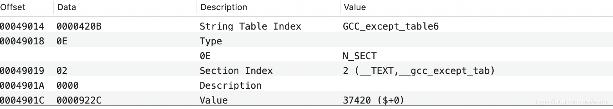
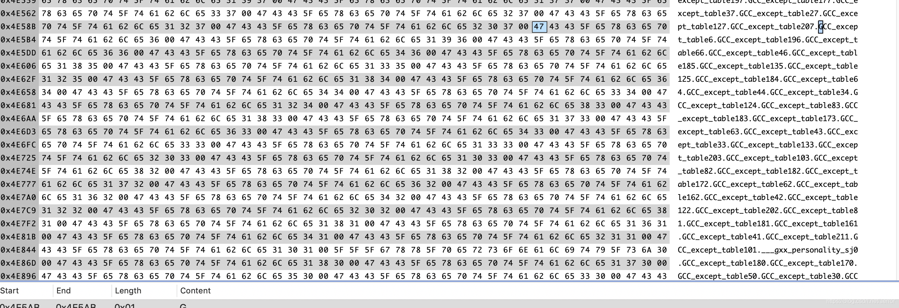
如图0x4E5AB即是GCC_except_table6这个符号的字符串了。
下面是外部符号
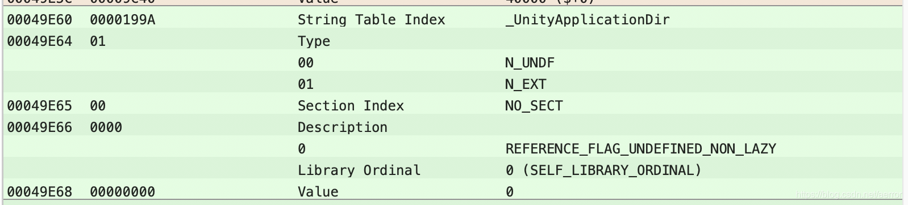
stroff+ n_strx = 304032 + 0x199A = 320939 （0x4BD3A）
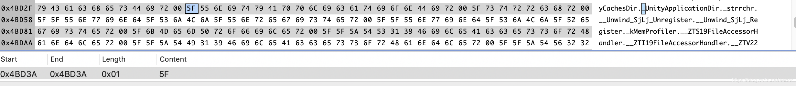
符号是零结束的字符串.
我们要加增一个外部符号，需要做以下的修改：
LC_SYMTAB:
nsyms 417 --> 417+1 = 418
stroff 304032 --> 304032+12 = 304044(0x4A3AC)
strsize 17752 -->17752 + strlen("CreateIphonePathFileSystem")(26)+1 = 17779(0x4573)
LC_DYSYMTAB:
nundefsym 112 --> 112 +1 == 113
计算插入符号结构的偏移
symoff 299028
299028 + 417 * 12 = 304032
插入12字节
58450000 01000000 00000000
在文件未尾插入新的符号。
CreateIphonePathFileSystem
结果如下：
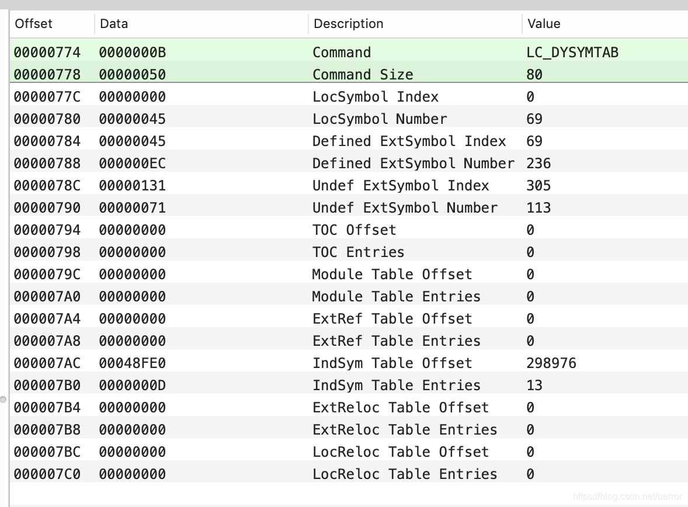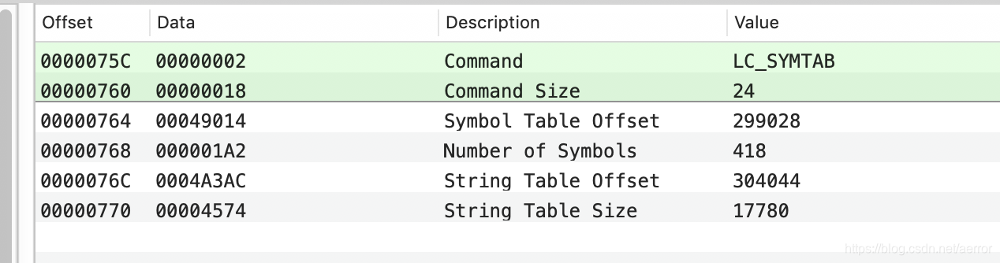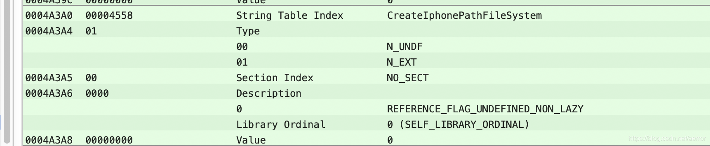
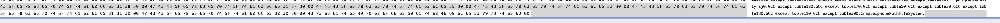
至此，符号已经加上。
下面加入调用的指令
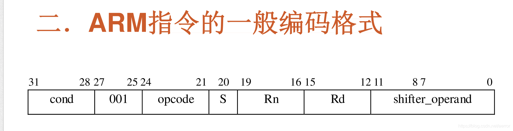
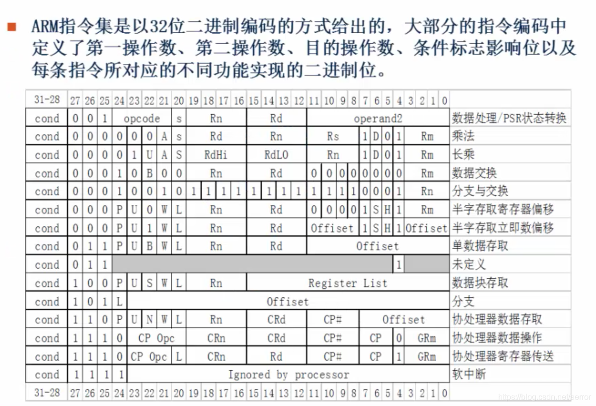
关于ARM的B,BL跳转指令
.text:00001260 A3 04 00 EB BL sub_24F4
echo "obase=2;ibase=16;EB0004A3" | bc
11101011000000000000010010100011
COND OP S Rd Rn shifter_operand
1110 1011000 0 0000 0000 010010100011
操作数转成16进制
echo "obase=16;ibase=2;010010100011" | bc
4A3
2.外部引用跳转例子A
指令：
0000687C CF DE 00 EB BL _UnityApplicationDir
0003E3C0 ?? IMPORT _UnityApplicationDir
转成二进制:
echo "obase=2;ibase=16;EB00DECF" | bc
1110 101100 0 0000 0110 1111011001111
110 1111011001111 <---跳转偏移
计算偏移：
(0003E3C0 - 0000687C -8)/4 = 0xDECF
echo "obase=2;ibase=16;DECF" | bc
110 1111011001111 <---即Rn和shifter_operand
2.外部引用跳转例子B
000068D4 BB DE 00 EB BL _UnityLibraryDir
0003E3C8 ?? IMPORT _UnityLibraryDir
$ echo "obase=2;ibase=16;EB00DECF" | bc
1110 101100 0 0000 0110 1111011001111
$ echo "obase=16;ibase=2;1101111010111011" | bc
DEBB
(0003E3C8-000068D4-8)/4 = DEBB
当前地址+ (偏移 << 2 + 8) = 目标地址
0x1260 + 0x4A3 * 4 + 8 = 24F4
偏移 = (目标地址 - 当前地址 - 8) >> 2
偏移 = (0x24F4 - 0x1260 - 8) / 4 = 0x4A3
假设跳转指令处的地址是A,跳转目标处的地址是B.
B,BL指令保存的是偏移地址,这个地址的计算方法是:
1.B-(A+8).A+8是因为ARM的流水线使得指令执行到A处时,PC实际的值是A+8.
2.第一步得到的值是4的倍数,因为ARM的指令是4对齐的,即最低两位为00.于是将这个值右移两位.
3.得到最终偏移
执行时:
1.取出偏移
2.左移两位
3.加入PC,这时PC的值刚好为目标处的地址值,即目标地址指令进入取指,流水线前两级被清空
根据上面的原理，进行armv7 32bit的.o文件进行调用修改, 过程如下:
__text:000009EC 1D FF FF EA B __ZN10FileSystemC2ERK10MemLabelId
1110 1010111 1 1111 1111 111100011101
__text:00000800 28 00 A0 E3 MOV R0, #0x28 ; '('
__text:00000804 49 F7 00 EB BL __ZnwmRK10MemLabelIdmPKci ; operator new(ulong,MemLabelId
__text:00000808 84 13 08 E3 03 10 40 E3 MOV R1, #(__ZTV20LocalFileSystemPosix_ptr - loc_81C)
__text:00000810 9C 23 08 E3 MOV R2, #:lower16:(_kMemString_ptr - loc_824)
__text:00000814 01 10 9F E7 LDR R1, [PC,R1] ; __ZTV20LocalFileSystemPosix_ptr ...
__text:00000818 03 20 40 E3 MOVT R2, #:upper16:(_kMemString_ptr - loc_824)
__text:0000081C 02 20 9F E7 LDR R2, [PC,R2] ; _kMemString
__text:00000820 08 10 81 E2 ADD R1, R1, #8
__text:00000824 00 10 80 E5 STR R1, [R0]
__text:00000828 00 10 A0 E3 MOV R1, #0
__text:0000082C 04 10 80 E5 STR R1, [R0,#4]
__text:00000830 18 10 80 E5 STR R1, [R0,#0x18]
__text:00000834 00 0B D2 ED VLDR D16, [R2]
__text:00000838 1C 3F 08 E3 00 30 40 E3 MOV R3, #(aRuntimeVirtual - loc_850) ; "./Runtime/VirtualFileSystem/
__text:00000840 08 20 92 E5 LDR R2, [R2,#8]
__text:00000844 28 41 09 E3 MOV R4, `vtable for'LocalFileSystemiPhone
__text:00000848 03 30 8F E0 ADD R3, PC, R3 ; "./Runtime/VirtualFileSystem/VirtualFile"...
__text:0000084C 00 40 40 E3 MOVT R4, vtable for'LocalFileSystemiPhone
__text:00000854 04 40 8F E0 ADD R4, PC, R4 ; `vtable for'LocalFileSystemiPhone
__text:00000858 07 0B C0 ED VSTR D16, [R0,#0x1C]
__text:0000085C 08 10 C0 E5 STRB R1, [R0,#8]
__text:00000860 08 20 84 E2 ADD R2, R4, #8
__text:00000864 00 20 80 E5 STR R2, [R0]
__text:00000868 08 20 9D E5 LDR R2, [SP,#8] --> load This
__text:0000086C 04 00 82 E5 STR R0, [R2,#4] --> this->0x4
__text:00000870 00 00 82 E5 STR R0, [R2] -->this->0x0
改成
__text:00000804 5D F7 00 EB BL CreateIphonePathFileSystem
__text:00000808 16 00 00 EA B 00000868
//.....
__text:00000868 08 20 9D E5 LDR R2, [SP,#8] --> load This
__text:0000086C 04 00 82 E5 STR R0, [R2,#4] --> this->0x4
__text:00000870 00 00 82 E5 STR R0, [R2] -->this->0x0
UNDEF:0003E580 IMPORT CreateIphonePathFileSystem
过程：
1. 计算调用外部函数：
(0003E580-00000804 -8)/4 = 0xF75D
$ echo "obase=2;ibase=16;F75D" | bc
1111011101011101
1110 1011000 0 0000 1111 011101011110
echo "obase=16;ibase=2;11101011000000001111011101011101" | bc
EB00F75D
指令为： 5D F7 00 EB
2. 计算跳转：
(00000868 - 00000808 -8)/4 = 0x16
echo "obase=2;ibase=16;16" | bc
10110
07 00 00 EA B loc_9BC
echo "obase=2;ibase=16;EA000007" | bc
11101010000000000000000000000110
$ echo "obase=16;ibase=2;11101010000000000000000000010110" | bc
EA000016
对于0804这个事实上是受重定位表影响的，我们不能直接像上面那样修改，详情如下图：
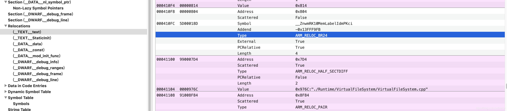
实际在0804这个地址的原始数并非 反编译看到那些数据49 F7 00 EB ，而是FD FD FF EB, 这个重定位的类型是BR24, 应该是说在加载的时候直接修改这条指令的低24bit.
这个数据结构：
/*
* Format of a relocation entry of a Mach-O file. Modified from the 4.3BSD
* format. The modifications from the original format were changing the value
* of the r_symbolnum field for "local" (r_extern == 0) relocation entries.
* This modification is required to support symbols in an arbitrary number of
* sections not just the three sections (text, data and bss) in a 4.3BSD file.
* Also the last 4 bits have had the r_type tag added to them.
*/
struct relocation_info {
int32_t r_address; /* offset in the section to what is being
relocated */
uint32_t r_symbolnum:24, /* symbol index if r_extern == 1 or section
ordinal if r_extern == 0 */
r_pcrel:1, /* was relocated pc relative already */
r_length:2, /* 0=byte, 1=word, 2=long, 3=quad */
r_extern:1, /* does not include value of sym referenced */
r_type:4; /* if not 0, machine specific relocation type */
};
即如果是外部符号的话 , r_symbolnum的低24bit, 即是符号的下标。

从上图的strlen我们进行计算
5d00019F & FFFFFF = 00019F = 415
rawoff = 0x49014 + 415*12 = 0x4A388
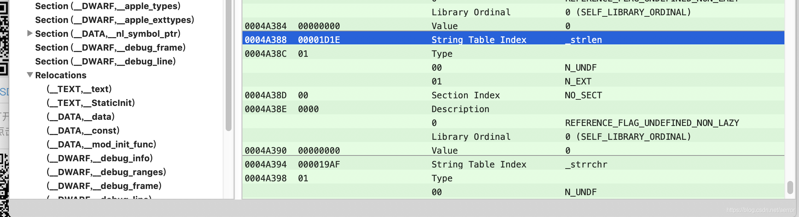
因此我们只需要修改一下重定位就可以了，即是，把0804的重定位到一个external符号
原来的：
0410F8: 00000804
0410FC: 5D0018D //397
rawoff = 0x49014 + 397*12 = 0x4A388
修改的：
0410F8: 00000804
0410FC: 5D001A1 //417
rawoff = 0x49014 + 417*12 = 0x4A3A0
修改两处后，工作完成.
结果如下两图：
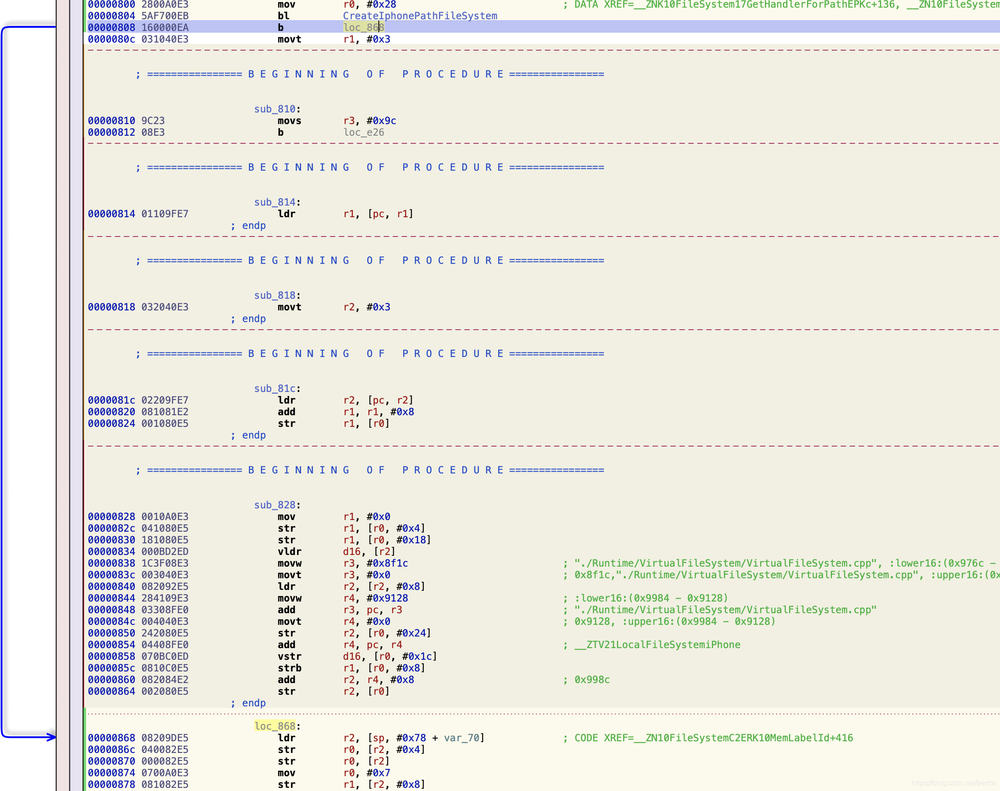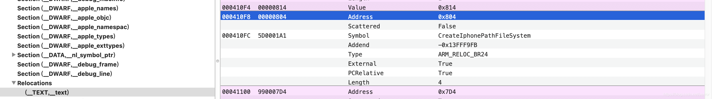
ARM64基本上一样，符号表比arm32位多了4个字节.
基本上按上面的流程处理就可以增另一个外部调用的符号表.
指令方面有些不一样的，但这个和32bit是一样结构编码的，如上图。
ARM64 BL和B指令, 跳转地址计算不大一样。
公式是: (目标地址-当前地址)/4
验证一下：
00000000000008b4 03000014 b loc_8c0
(76c - 764 )/4 = 3
0000000000000924 02000014 b 92c
(92c- 024)/4 = 2
//这个有重定位表, 计算应该是一样的。
000000000000050c 7FF20094 bl __ZnwmRK10MemLabelIdmPKci
0000000000000508 E10314AA mov x1, x20
000000000000050c 7FF20094 bl __ZnwmRK10MemLabelIdmPKci ; operator new(unsigned long, MemLabelId const&, unsigned long, char const*, int)
0000000000000510 E8010090 adrp x8, #0x3c000
0000000000000514 086947F9 ldr x8, [x8, #0xed0] ; __ZTV20LocalFileSystemPosix
0000000000000518 08410091 add x8, x8, #0x10
000000000000051c 087C00A9 stp x8, xzr, x0
0000000000000520 1F1000F9 str xzr, [x0, #0x20]
0000000000000524 E8010090 adrp x8, #0x3c000
0000000000000528 08B547F9 ldr x8, [x8, #0xf68] ; _kMemString
000000000000052c 090940B9 ldr w9, [x8, #0x8]
0000000000000530 093000B9 str w9, [x0, #0x30]
0000000000000534 080140F9 ldr x8, x8
0000000000000538 081400F9 str x8, [x0, #0x28]
000000000000053c 280000D0 adrp x8, #0x6000
0000000000000540 08212B91 add x8, x8, #0xac8 ; __ZTV21LocalFileSystemiPhone
0000000000000544 1F400039 strb wzr, [x0, #0x10]
0000000000000548 08410091 add x8, x8, #0x10 ; 0x6ad8
000000000000054c 080000F9 str x8, x0
0000000000000550 A00200A9 stp x0, x0, x21 // x0, x0, 存到x21+0, x21+8?
0000000000000554 BF0A00F9 str xzr, [x21, #0x10] //清零 x21+0x10
0000000000000558 230000D0 adrp x3, #0x6000
000000000000055c 63F02191 add x3, x3, #0x87c ; "./Runtime/VirtualFileSystem/VirtualFileSystem.cpp"
0000000000000560 00148052 movz w0, #0xa0
0000000000000564 E2031D32 orr w2, wzr, #0x8
0000000000000568 84098052 movz w4, #0x4c
改成
000000000000050c 7FF20094 bl _CreateIphonePathFileSystem //这里还是转重定位表就可以了。
0000000000000518 0E000014 b 0000000000000550
重定位表的信息：
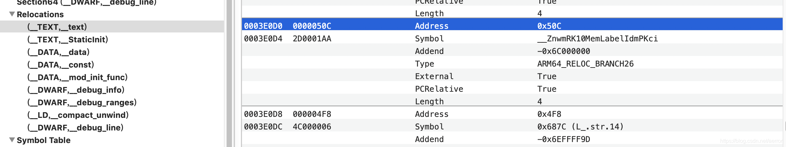
将
3E0D0: 5D0001A3 -> 5D0001BE (符号索引为446)
Arm64修改完成
000000000000050c A7F20094 bl _CreateIphonePathFileSystem
0000000000000510 E8010090 adrp x8, #0x3c000
0000000000000514 086947F9 ldr x8, [x8, #0xed0] ; __ZTV20LocalFileSystemPosix
0000000000000518 0E000014 b loc_550
....
0000000000000550 A00200A9 stp x0, x0, x21